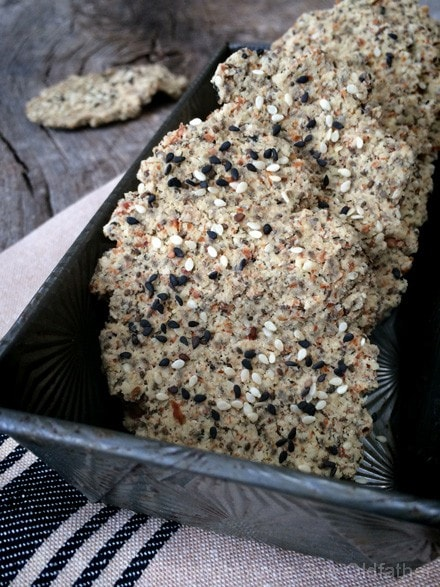
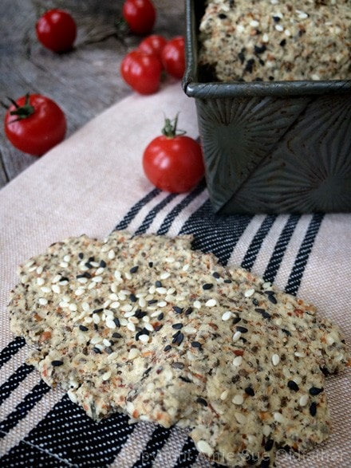

Za’atar Middle Eastern Crispy Flatbread

~ raw, vegan, gluten-free ~
What exactly is za’atar? Besides a spice blend, a wild herb, a dip, a condiment, it also takes us on a culinary journey, granting us insight into the foodways of the Middle East; Jordan, Lebanon, and Israel, and others… each one taking pride in their guarded secret of how za’atar is made.
It lends a broad nutty, woodsy, and bright accent to foods and is quite versatile enough to use as an everyday spice blend.
You can buy Za’atar in Middle Eastern markets and some mainstream grocery stores, but it can also be blended at home in your very own kitchen. I have provided a recipe blend that I made, which may differ from others, but after researching what went into it, I think I did pretty well considering what ingredients I had in my pantry. :)
From what I have learned, Za’atar is most frequently used as a table condiment, dusted on food on its own, or stirred into some olive oil as a dip for flatbreads. In this case, rather than putting on flatbreads, I put it in my flatbread recipe. In Lebanon, Za’atar is most associated with breakfast, so try sprinkling some on oatmeal or yogurt. If you are a popcorn lover, melt a little coconut oil over it and try sprinkling some Za’atar on it. Who knew!
I no longer tremble in fear of spices; I now tremble in the excitement of spices!
Ingredients:
Yields 41 flatbreads (2 Tbsp per cracker)
Dry Ingredients:
- 1 cup almond flour
- 1/4 cup black or white sesame seeds
- 2 1/2 Tbsp Za’atar spice
- 3 Tbsp raw coconut flour
- 1 Tbsp caraway seeds
- 3 tsp ground cumin
- 2 tsp Himalayan pink salt
Wet Ingredients:
- 1 cup chia seeds, soaked 2 cups water
- 1/4 cup water
- 1 Tbsp cold-pressed olive
- 1 Tbsp toasted sesame oil
- 3 Tbsp maple syrup
- 2 Tbsp fresh lemon juice
Hand mix in:
Preparation:
- Soak the chia seeds in 2 cups of water for 15+ minutes. It should be very thick. Do this while you are preparing the rest of the recipes.
- In the food processor fitted with the “S” blade, place the almond flour, sesame seeds, Za’atar seasoning, coconut flour, caraway, cumin, and salt. Pulse together until combined.
- Add the soaked chia seeds, water, olive oil, toasted sesame oil, maple syrup, and lemon juice. Process till everything is well incorporated. Pour into a large mixing bowl.
- Add the almond pulp, and with your hands, mix everything well.
- Let the dough rest for about 15 minutes so that the chia seeds to bind everything together.
- To create the flatbreads, use about 2 Tbsp worth of dough.
- Roll into an oval shape on the teflex sheet that comes with the dehydrator or on parchment paper. I do two at a time.
- Cover with another sheet and with a rolling pin, use even pressure to press them out to a flatbread shape. They should be reasonably thin, no more than 1/4″ thick.
- Transfer the flatbread from the teflex to your hand, then to the mesh sheet.
- Creating “bubbles” or creases is optional.
- You can spread this batter flat onto the dehydrator tray and score into cracker shapes if desired. Whatever makes you smile. :)
- Sprinkle extra sesame seeds and coarse sea salt on top before dehydrating.
- Dehydrate at 145 degrees for 1 hour, then reduce to 115 (F) degrees for 6-10 hours or until dry.
- These should last several weeks in an airtight container. If they start to moisten a bit, return them to the dehydrator and dry until they firm back up.
To make your own Za’atar Spice:
Yields 1/2 cup
- 3 Tbsp dried thyme
- 2 Tbsp dried lemon peel
- 1 Tbsp sesame seeds
- 1/2 tsp dried oregano
- 1/4 tsp sea salt
Preparation:
- In a spice grinder, pulse the spices together a few times just enough to mix and break up some of the seeds — there should still be many whole seeds visible.
- Store in a cool, dark place for up to six months.
The Institute of Culinary Ingredients™
- To learn more about maple syrup by clicking (here).
- Click (here) for my thoughts on raw agave nectar.
- What is Himalayan pink salt, and does it matter? Click (here) to read more about it.
Culinary Explanations:
- Why do I start the dehydrator at 145 degrees (F)? Click (here) to learn the reason behind this.
- When working with fresh ingredients, it is essential to taste test as you build a recipe. Learn why (here).
- Don’t own a dehydrator? Learn how to use your oven (here). I do, however honestly believe that it is a worthwhile investment. Click (here) to learn what I use.


© AmieSue.com